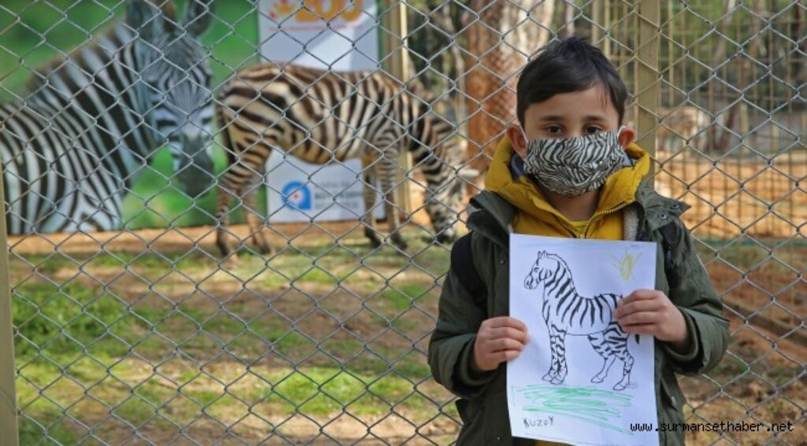

Gaziantep Hayvanat Bahçesi’nde kutlanan Dünya Zebra Günü, ziyaretçilere bu özel türün biyolojik özelliklerini ve ekolojik önemini tanıtmayı amaçlayan etkinliklerle gerçekleşir. Safari parkında düzenlenen rehberli turlar sayesinde öğrenciler ve aileler zebraları doğal yaşam alanlarında gözlemleyerek onların sosyal davranışları, beslenme alışkanlıkları ve doğadaki rolleri hakkında bilgi edinir. Program kapsamında yapılan zebra besleme gösterileri, çocukların bu hayvanları yakından tanımasına ve onların doğal davranışlarını gözlemlemesine imkân sağlar. Ayrıca etkinlik boyunca açılan fotoğraf sergileri ve bilgilendirme panoları, zebraların korunma gerekliliğini vurgular ve farkındalık oluşturur. Çocuklara yönelik doğa oyunları ve interaktif atölyelerle çevre bilinci pekiştirilirken, ziyaretçiler rehberlere sorular yönelterek daha fazla bilgi edinme fırsatı bulur. Böylece Dünya Zebra Günü, Gaziantep Hayvanat Bahçesi’nde hem eğitici hem de eğlenceli bir kutlama olarak doğa sevgisini artırır ve hayvan koruma bilincini güçlendirir.